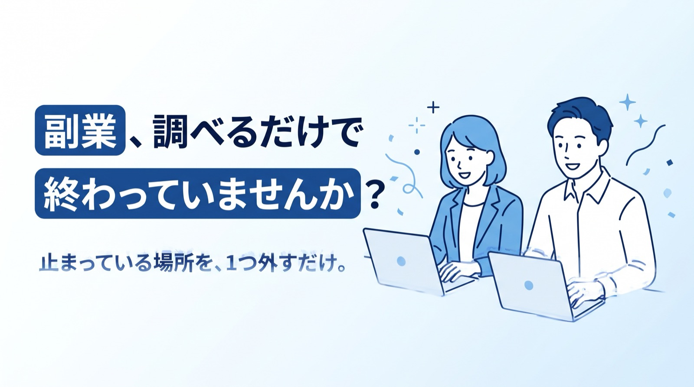
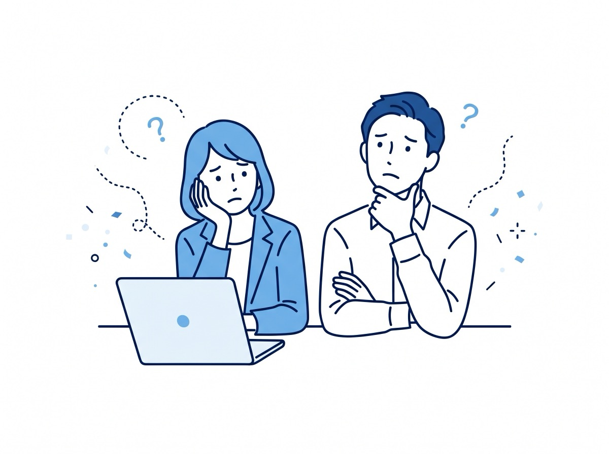

このページは紹介（PR）を含みます。紹介リンクから申し込みがあると、運営者に紹介料が入ります。
やらなきゃいけないのは、わかっているけれど…
動画も記事も見たのに、
何から始めるか決められない。
怪しい話が多すぎて、
どれが本物かわからない。

始めても、
1週間で止まってしまう。
ChatGPTを使っているのに、
全然楽にならない。
あなたのセンスの問題ではなく、
「止まりやすい場所」と「外し方」を知らないだけです。
先に「週に何時間使えるか」を数字で書く。できる副業は2〜3個まで減ります。
始める前にお金を払わせる、仕事の中身を1行で言えない、「誰でも簡単」が並ぶ。この3つだけ避ければ十分です。
1つ決めたら、2週間は他を見ない。比べるのは続けてからで間に合います。
稼いだ額ではなく、作業した時間をメモする。数字が出る前に「続いた」を残すと戻ってこられます。
「表にして」「穴を3つ挙げて」「案を3つ出して」と頼むと、考える作業ごと渡せます。
手順が1冊にまとまった Brain の教材です（税込 20,400円）。売上の数字は販売者の申告です。中身と返金の条件は、販売ページで確かめてから決めてください。
販売ページを見る紹介リンクです。購入されると運営者に紹介料が入ります。収入を約束するものではありません。